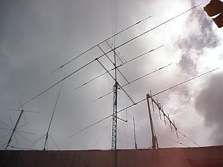
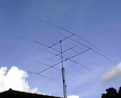

YV(Venezuela)からYV5LIXと共にアクティブにQRVしているYV5GRV・Felix
QTHは海抜1,700mで、YV4AB/B同様JAに対するロケーションは抜群に良い。
10/22日夜のロングパスでJA1からもQSO出来た。
QSL to YV5GRV
Felix A Martin H
P.O.Box 2285,
Caracas 1010-A D.F
Venezuela
(TNX YV5GRV & YV5LIX)
【 Back Issues Oct.2000】
TIME:UTC(JST-09:00)
Report from JA1RJU (PM95sq)
31.Oct.2000(15:00g)
V73SIX 22:45- 50.014 CW Beacon
LU7DZ 22:45 50.110 SSB
LW3EBJ 23:05 50.101 CW
LU6DLB 23:08 50.115 SSB
LU2FFD 23:10 50.150 SSB
LW4DIR 23:11 50.134 CW
LU9AEA 23:15 50.110 CW
CX1CCC/B 23:18- 50.019.6 CW Beacon
CE-FM 23:18- 47.900 FM CE FM stn.
LU6EF 23:20 50.105 CW
LU5EJU 23:30 50.120 SSB
PY5CC 23:32 50.110 SSB
PY2XB 23:36 50.130 SSB/CW
PU3WPA 23:46 50.110/107 SSB
PU3WPA 00:42 50.107 SSB
FO0WEG 01:20 50.110 SSB
*VK-TV 02:00- 46.172/240 --
*ZL-TV 02:00- 45.24/25/26-- weak
*9M/DU-TV 02:00- 48.24/25/26--
V73AT 02:17 50.102 CW
A52JA 02:50- 50.125 CW
V73SIX 03:00- 50.014 CW Beacon
(ZK1NJC 03:12- 50.100 CW JA3.4.5.6)
PY2XB 04:14 50.110 CW
A52JA 04:22- 50.125 SSB
V73SIX 05:30- 50.014 CW Beacon
BG7OH 05:50 50.120 SSB
VR2IL 05:50 50.120 SSB
A52JA 05:50 50.125 CW
9M6BAA 06:00 50.108 CW
VR2XVD 06:07 50.145 SSB
V73AT 06:11 50.125 CW
A52JA 06:12 50.125 SSB
AX6RO 06:32 50.100 CW
VK6AOM 07:55 50.110 CW
VK6RSX 07:55- 50.304 CW Beacon
A52JA 08:07- 50.125 CW
VK5AYD 08:25 50.110 CW
9A8A 08:40 50.100/094 CW
SP6GWB 08:50 50.130 CW
IT9RZR 08:54 50.110 CW
9A5ST 09:08 50.104 CW
I0JX 09:21 50.100/143 CW
T88TU 11:35 50.150 SSB
T88QG 11:48 50.130 SSB QSL JA1QGT
VK8GF 11:55 50.130 SSB
DU1EV 12:13 50.103 CW
|
◎ 運用開始以来、QSOのチャンスの無かったNorth CookのZK1NJCが始めてJAにオープンした。 朝から入感していた南米のコンデションがまだ残っている03:00z過ぎ、西日本を中心に入感してきた。 今日のオープンでは2エリア以東までコンデションが移ってこなかった。 オープン終了後のZK1NJCからの報告によると、今日のオープンでQSO出来たJA'sは40局、初QSOはJF5NTTだった。 このオープンの最中、JAのパイルアップを"押さえ"PYからも2局(PY5CC、PY2XB)QSOに成功している。 現在、6m DXCCの世界一にランクされているPY5CC・Peterは、この日のZK1NJCとのQSOでDXCCを197！に伸ばしたと。 尚、ZK1NJCの6mの"ログ・サーチ"が設けられているので、QSOに不安のある局はZK1NJC 6m Log Searchで確認してみると良い。 * ZK1NJCからのお願い * 6mのCW運用中にSSBへのQSYを要望する局がいますが、現状では対応致しません。 弱い信号を一生懸命聞いている局もいる事を理解して下さい。
◎ BhutanのA52JA(OP.JK1AFI)は、昨日の大オープンに続いて今日も昼前から強力に入感してきた。
1エリアでは昨日よりも信号は強力で安定していた。 |
30.Oct.2000(15:00g)
K5K 21:55 50.105 CW
KH6SX 22:07 50.103 CW
V73SIX 22:10- 50.014 CW Beacon
KH6HME/B 22:19- 50.061 CW Beacon
*CE-FM 22:10- 47.900 FM CE FM Stn.
LU9JH 22:45 50.120 SSB
*ZL-TV 22:50- 45.24/25/26-- weak
LU2FFD 22:53 50.120 SSB
KH2TX/KH0 22:57 50.132 SSB SC 90deg.
KH6SX 23:08 50.134 CW
WH6DQ 23:04 50.120 SSB
K5K 00:00 50.105 CW
*VK-TV 00:00- 46.172/240 --
*ZL-TV 00:00- 45.24/25/26-- weak
*9M/DU-TV 00:00- 48.24/25/26--
T88TU 00:28 50.130 CW QSL JK7TKE
K5K 00:44 50.105 SSB/CW
A52JA 01:27 50.125 CW/SSB QSL JH1NBN
VK4BKM 02:20 50.100 CW
VK4RGG 02:20- 50.058 CW Beacon
VK2QF 02:21 50.106/100 CW
AH6TM 02:23 50.130 SSB
A52JA 02:50 50.125 CW
K5K 03:20 50.105 CW CQing.
9M6BAA 03:36 50.107/115 SSB
*BY-TV 04:00- 49.750 --
V73SIX 04:40- 50.014 CW Beacon
N7ET/DU7 05:26 50.102 CW
V73AT 06:14 50.100 CW
9M6BAA 08:05 50.145 CW
JH0XUP/JD1 09:09 50.106 CW SC
XU7AAP 09:30 50.120 SSB
|
◎ 早朝からFBに入感したKingman ReefのK5Kに続いて、昼前からBhutanのA52JA(OP.JK1AFI)が入感してきた。
01:27z(11:27JST)にCWでQSOしたJE1BYU(茨城)がJAからの初QSOとなった。
ダイレクト(270度方向)から入感してきたA5のコンデションは、5分程で2エリア以西に移ったが、
01:47z頃から再び1エリアでも聞こえ始め、先のA52AでQSO出来なかった1エリアでも、多く局が"New One"を射止めた。 今日の入感は、午前中の太平洋方向がFBだったため、North CookのZK1NJCを狙ってアンテナを南東に向けていたJA局を慌てさせた。 A52JAはCW/SSBで午後まで断続的に入感、50.125と50.135MHzのスプリットでJAを捌いていた。 一方、注目のNorth CookのZK1NJCは、クラスターにリポートがあったものの、HFでQRVしていたZK1KDN(OP.JR2KDN)からの情報では、 6mでは04:00z現在まだJAとのQSOは行われていないと。 K5K(Kingman Reef)の6mは10/30の11:00zにQRTした。 |
29.Oct.2000(15:00i)
V73SIX 23:15- 50.014 CW Beacon
KH6HME/B 23:30- 50.061 CW Beacon
NH6YK 01:00 50.110/120 SSB
KH6SX 01:05 50.103 CW
KH6HI/B 01:10- 50.065 CW Beacon
LW4DIR 01:30 50.100 CW
CX1CCC/B 01:40- 50.019.6 CW Beacon
LU9EHF 01:43 50.110/115 SSB
LU7FO 01:43 50.110 SSB
LU1DMA 01:49 50.140 SSB
CX4AAJ 01:49 50.130 SSB
LU7FN 01:59 50.120 SSB
LU9AEA 02:07 50.108 SSB
LU2FFD 02;11 50.120 SSB
LU9EHF 02:20 50.115 SSB
LU3DCA 02:30 50.130 SSB
*VK-TV 04:00- 46.172/240 --
*ZL-TV 04:00- 45.24/25/26-- weak
*9M/DU-TV 07:00- 48.24/25/26--
9M2KE 08:20 50.107 CW
|
◎ North CookのZK1NJC(OP.JI1NJC)が今日の午後から6mの運用を始めた。
現在、タワーの最上部に上げた5elから50.100MHzでビーコンを発射している。
オープン時には50.140MHzとのスプリットとなるので注意。
A52(Bhutan)から運用しているA52JA(OP.JK1AFI)は、初日の10/27日にさっそくVK8とのQSOがリポートされていたが、
JAとのパスは今のところまだ報告されていない。ビーコンは50.125MHzで発射されているので、この周波数にも要注意。
◎ 夕方に連続して入感していた南西方向のヨーロッパのスキャッターも、 今日はヨーロッパと勘違いした"お粗末"なパイルが一度あっただけで、"空振り"に終わった。 |
28.Oct.2000(15:00f)
V73CW 22:42 50.110/155 CW/SSB
V73SIX 22:42- 50.014 CW Beacon
KH6HME/B 23:00- 50.061 CW Beacon
KH7T 23:25 50.110 CW
KH6SX 23:29 50.103/100 CW
*VK-TV 03:00- 46.172 --
*9M/DU-TV 03:00- 48.24/25/26--
3W3SK 05:50 50.110/115 SSB
I0JX 08:09 50.090 CW
(I0WTD.IV3GBO 9A4DA.9A3JI 08:15-CW weak)
9M6BAA 08:27 50.145 CW
(9H1CG 08:30 50.123 CW weak)
DU1EV 14:10 50.140 SSB
(HP3CWB 14:15 50.130 SSB L.P)
(W5OZI 14:08 50:120 CW L.P JR6)
VK8MS 14:50 50.110 SSB
4W6UN 14:55- 50.097 CW Beacon
(TI/JA6WFM 14:57 50.105 CW/SSB L.P)
| ◎ 今日のスキャッターによるヨーロッパの入感状況は、一連のオープンの中では信号も弱く期待はずれだった。 昨日までの北欧から東欧に掛けての広範囲のオープンから、1エリアではI(Italy)を中心とした入感で、 JA側でのオープンのエリアも地域差のある狭い入感だった。 ZK1(North Cook Is)からの運用は、明日(10/29)の午後から。6mではZK1NJCのコールサインが使われる。 |
27.Oct.2000(15:00g)
LW2DQZ 21:17 50.105 SSB
LU1DMA 21:27 50.105 SSB
LU2FFD 21:28 50.110 SSB
*VK-TV 01:00- 46.172/240 --
VK2BA 01:23 50.110/120 SSB
VK2FHN 01:42 50.110/130 SSB
VK2YOC 01:52 50.110 SSB
VK4NW 02:29 50.110/130 SSB
V73SIX 02:40- 50.014 CW Beacon
*9M-TV 03:00- 48.240/260 --
(DL7QY 06:26 50.108 CW JA6)
9M6BAA 06:30 50.145 CW
(YU1EU 07:41 50.108 CW JA9)
SP7EXY 07:50 50.101 CW
9A8A 07:56 50.106 CW
XU7ABL 08:07 50.110 SSB
9H1BT 08:13 50.101 CW
I0JX 08:15 50.101 CW
YU1EU 08:33 50.101 CW
DL7QY 08:38 50.116 CW
S59A? 08:39 50.116 CW
XU7AAP 08:50 50.117 SSB Worked EU. QSL via N2OO
SP7EXY 09:18 50.106 CW UP 1
SP6GWB 09:29 50.101 CW
OM3NY 09:46 50.100 CW
VK4BRG 09:58 50.120 SSB
VK4CXQ 10:14 50.105 CW
T88TU 12:29 50.150 SSB QSL JK7TKE
|
◎ 南西方向のスキャッターで3日連続のヨーロッパの入感で賑わった。
30分ほど遅れてスタートした今日のオープンは、昨日までとは異なり全国的にオープン、パイルアップは一段と激しいものだった。
ヨーロッパ側も広範囲に入感、信号も強力だった。今日の入感方向は、若干西寄りの240-250度方向。10:00z過ぎまで入感した。 いよいよJA局によるA52JA(Bhutan)、ZK1(North Cook Is)のDXpeditionが始まった。 両グループとも、スプリットによる運用なので入感時の周波数に注意。(DXpeditionの欄参照) |
26.Oct.2000(15:00h)
*ZL-TV 21:30- 45.24/25/26--
V73SIX 23:00- 50.014 CW Beacon
*CE-FM 00:20 47.900 FM CE Music
(K5K 01:14 50.105 CW/SSB JA8)
LU2FFD 01:04 50.110/150 SSB
LU2NI 01:11 50.107 SSB
LU2EG 01:25 50.120 SSB
9M6BAA 01:44 50.142 SSB
LU2FFD 01:47 50.114 SSB
PY5CC 02:30 50.115 CW
PY2VA 03:00 50.120 CW/SSB
PY2XB 03:10 50.110/145 SSB/CW
LW4DIR 03:21 50.140 CW
V73SIX 04:00- 50.014 CW Beacon
KH6HME/B 04:50- 50.061 CW Beacon
SP6ASD 07:00 50.107 CW
OH2BC 07:09 50.102 CW
9V1JA 07:15 50.115/120 CW
VK5AYD 07:36 50.111 CW
9A7DCD 07:40 50.116 CW
SP5CCC 07:46 50.100 CW
9A8A 07:51 50.100 CW
S59A 08:04 50.107 CW
VK4BRG 08:24 50.110 SSB
VK4APG 08:26 50.110 CW
VK4DO 08:48 50.110/130 SSB
V73CW 09:49 50.150 CW
VK4WTN 09:58 50.105 CW
VK4APE 12:08 50.110 SSB
DU1/GM4COK 12:31 50.110 CW
DU1EV 13:25 50.105 CW
|
◎ 昨日に続いて南西方向のスキャッターでヨーロッパが入感した。
07:00z(16:00JST)頃から始まったヨーロッパのオープンは1時間半ほど続いたが、
昨日も強力だったOH2BCの他は平均して弱い信号だった。 昨日のK5K(Kingman Reef)は午後7時以降まで長時間に渡って聞こえていたが、 今日も朝から散発的に入感していた。 |

QSL to YV5GRV
Felix A Martin H
P.O.Box 2285,
Caracas 1010-A D.F
Venezuela
(TNX YV5GRV & YV5LIX)
25.Oct.2000(15:00h)
K5K 21:55 50.105 CW
PU3WPA 22:55 50.110/107 SSB
PY3SOL 22:58 50.113 SSB GG60
PY3OR 23:17 50.110 SSB
PY3FF 23:35 50.103 CW GF49
PP5JD 23:38 50.132 SSB GG54
K5K 00:23- 50.105 CW weak QSX 50.115MHz
ZL3TY 01:13 50.110 CW
LU4HP 01:15 50.115 SSB GF87
LU2FFD 01:18 50.130 SSB
LU3HR 01:25 50.115 SSB FF76
LU6HI 01:28 50.135/103 SSB/CW FF76
LU2NI 01:30 50.107 SSB FG72
9M6BAA 01:30 50.120 SSB
LU9JH 01:45 50.115 SSB GF08
KH6HME/B 02:18- 50.061 CW Beacon
ZL3TY 02:33 50.105 CW
*ZL-TV 02:35 50.750 FM TV Audio
VK4KK 02:37 50.105 SSB
ZL2AGI 02:43 50.105 CW
V73SIX 03:00- 50.014 CW Beacon
VK4ZXC/m 03:21 50.125 SSB
VK4BRG 03:21- 50.077 CW Beacon
VK4RGG 03:21- 50.058 CW Beacon
VK5AYD 03:45 50.111 CW
K5K 03:49 50.105 CW/SSB
K5K 05:39 50.105 CW
OH2BC 07:32 50.120 CW SC.230deg
SP7EXY 07:35 50.120 CW SC
SP6GWB 07:40 50.100 CW SC
YL3AG 07:45 50.108 CW SC
DU1/GM4COK 07:47 50.106 CW
VK4BRG 08:29 50.115 SSB CQ EU
XU7ABF 08:31 50.110 SSB
VK5AYD 08:59 50.110 CW
VK4CP 09:00 50.103 CW CQ EU
DU1ZV 09:13 50.105 CW CQ EU OP.JA1BRK
K5K 09:45 50.105 CW
|
◎ 今日は早朝から1エリアでも"Kingman Reef Day"となった。
22:00z前後に東関東に短いオープンがあったK5Kは、
その後にオープンした南米(PY)が一段落した00:30z頃から再びCWでぎれとぎれに入感し始めた。
2度目の南米(LU)、ZLがフェードアウトして暫くしてから、K5Kが急上昇してきた。
03:47z頃から1エリアのパイルアップが始まった。 K5K(OP.JH7OHF)はCW/SSBで強力で、聞いていた局のほとんどがQSO出来たものと思われる。 この時間のオープンは1エリアが中心だったが、04:20z頃から呼ぶ局も少なくなりCQの連続だった。 その後、今回ほとんどオープンのチャンスの無かった2エリアにもコンデションが移り、 昨日の西日本に続いて、東日本でも多くの局が"New one"を手にした。 K5Kの信号は夜まで断続的に聞こえていた。 尚、一昨日(23日)の初オープンでQSOに成功したJA8JRC(千歳市)が、初のKH5/K(Kingman Reef)とのQSO局となっている。 ◎ 07:30z頃から南西方向のスキャッターでオープンしたヨーロッパは強力。 オープンの時間は30分程度で短かったが、OH2BCなどはスキャッターとは思えないほど安定した信号だった。 |
24.Oct.2000(15:00g)
LU6DRV 21:51 50.110/133 SSB
CX3AN 22:08 50.110 CW
*ZL-TV 23:00- 45.24/25/26--
*VK-TV 03:30- 46.172 --
*ZL-TV 03:30- 45.24/25/26--
ZL3NE 04:13 50.110 CW
ZL2AGI 04:13 50.110 SSB
ZL4AAA 04:16 50.110 CW
V73SIX 05:45 50.014 CW Beacon
K5K 07:17 50.105 SSB/CW JA2.3.4.5.6.JR6 QSX 50.115MHz
V73AT 09:23 50.105 CW
VK4KK 12:50 50.110 CW
VK4CXQ 12:51 50.110 CW
N7ET/DU7 12:56 50.110 CW
DU1EV 13:02 50.110 CW
|
◎ 昨日(23日)のK5K・Kingman Reefの初オープンでは、JA7の他にJA8、JA1(北関東の一部)でもQSOに成功している。
03:41zにSSBでQSOした茨城のJE1BYU・谷島さんのリポートによると、入感したのは03:41z前後の5分程度。
この時間、東京など関東の内陸部ではK5Kの信号は確認出来ていない。
情報によると、K5Kでは6mのリニアーアンプが壊れ使えなくなったため現在はIC-756 PROの単体で運用している。
28.465MHzで運用しているK5K(OP・JH7OHF)の情報では04:00z現在、まだJAとはQSO出来ていないと。 今日のK5Kのオープンは07:15z頃から始まった。入感していたエリアは西日本が中心でJA2、3、4、5、6(JR6)でQSOしている。 CQを連発するK5Kの信号が"長時間"入感したJA5、6とは裏腹に、スキャッター気味のこの時間の信号は、東日本ではほとんど聞こえなかった。 |
23.Oct.2000(15:00g)
V73SIX 22:00 50.014 CW Beacon
(LU2FFD 00:10 50.110 SSB JA7)
*9M/DU-TV 01:20- 48.24/25/26--
9M6CT 01:10 50.115 SSB
*VK-TV 02:45- 46.172 --
(K5K 03:33 50.105 CW/SSB JA7)
(K5K 09:13 50.105 CW JA6)
V73SIX 09:29 50.014 CW Beacon
P29BPL 12:30 50.029 CW Beacon
VK4APE 12:58 50.110 SSB
VK9CK 13:02 50.125 SSB
4W6UN 13:00 50.097 CW Beacon
DU1/GM4COK 13:27 50.110 CW
HL1KTX 13:50 50.112 CW
DU1EV 14:48 50.110 SSB
| ◎ K5K・Kingman ReefがJAにもオープンした。入感はJA7の南部でオープン時間は短かった。 夕方にはJA6でもQSOがリポートされている。 TX0SIX(FO3BM)からの28.885MHzでの情報によると、Philは明日(日本時間24日)QRTして島(Marquesas Is)を離れると。 |
22.Oct.2000(15:00i)
*EU-TV 23:30- 48.250/242 -- weak
*EU-TV 00:30- 48.250/242 --
FO0WEG 00:48 50.105 SSB Austral Is. QSL SP9FIH
CT1DYX 01:06 50.110/125 SSB
EH7CD 01:12 50.120 SSB QSX 130
*9M-TV 01:20- 48.240/260 --
9M2NK 02:27 50.107 CW
9M6BAA 03:15 50.115 SSB
FO0WEG 03:15 50.105 SSB
9M2KT 03:20 50.110 SSB
V73SIX 03:40 50.014 CW Beacon
*VK-TV 04:00- 46.172/240 --
*ZL-TV 04:00- 45.24/25/26-- weak
VK4CWT 04:30 50.130 SSB
KH6HME/B 05:05- 50.061 CW Beacon
KH6- ? 05:24 50.110 CW
VK4KK 05:31 50.110 CW
VK4LR 05:37 50.110 SSB
KH7R 06:20 50.110 SSB
YL3AG 07:15 50.110 CW SC.230 (JA1.7.9.0)
V73AT 07:19 50.105 CW
XU7ABF 07:38 50.150 SSB
DU1EV 07:54 50.110 CW
9M2JKL 08:01 50.107 CW
VK4DFE 08:28 50.110/150 SSB
VK4TZL 08:49 50.110 SSB
VK4CP 09:19 50.110 CW CQ EU
VK4FNQ 09:20 50.110 SSB
YV4AB/B 12:50- 50.025 CW L.P Beacon
YV5GRV 13:16 50.107 CW
|
◎ いよいよKingman ReefのDXpediの運用が始まった。コールサインはK5K。 早朝は弱いロングパスのヨーロッパが入感。今日もFO0WEG(Austral Is)が良くきこえていたが、 期待されているFO0・Marquesas Isは入感しなかった。 TX0SIX(FO3BM)の28.885MHzの情報では、今日現在JAとは残念ながらQSO出来ていないと。 Philによると今回はコンデションがあまり良くないので間もなく島を離れ、来月もう一度トライしたいとのこと。 |
21.Oct.2000(15:00f)
*EU-TV 22:30- 48.250/242 --
EH7KW 22:30 50.100 CW Long.Path 150deg
EH7AH 22:59 50.115 SSB
CT1FMX 23:07 50.110 SSB
EH8BPX 23:08 50.110/150 SSB
CT1DYX 23:15 50.120 SSB
EH7CD 23:35 50.123 SSB
EH8BPX 00:10 50.105/150 SSB
(PY's 01:00- 50.110- SSB JA6/JR6)
*9M/DU-TV 01:30- 48.24/25/26--
FO0WEG 02:10 50.105 SSB Austral Is. QSL SP9FIH
9M6BAA 04:21 50.105 CW
*VK-TV 04:30- 46.172/240 --
VK4BRG 04:35- 50.077 CW Beacon
V73SIX 04:38- 50.014 CW Beacon
9M2NK 06:49 50.107 CW
YB5QZ 07:24 50.112 CW
9M6BAA 07:25 50.115 CW CQ EU
DL3RBH 07:53 50.100 CW SC 230deg
DL3DXX 07:57 50.108 CW SC
DL7QY 08:12 50.108 CW SC
SP6GWB 08:12 50.108 CW SC 8 JA's QSO. 08:04-08:25z
4W6UN 12:30- 50.097 CW Beacon
9M6BAA 14:10 50.115 SSB
| ◎ 早朝のロングパスのヨーロッパ、夕方のスキャッターによるヨーロッパと久しぶりに週末の6mは賑わった。 スキャッターのヨーロッパは東日本からは信号も弱く、QSOにはそれなりの"耳"とパワーが必要だった。 日中に入感したFO0WEGは強力だったが、同じFO0でもこちらはAustral Is。 期待されているFO0・Marquesas Isは今日もQSOのリポートは無い。 |
20.Oct.2000(15:00e)
*EU-TV 23:15- 48.250 --
*9M/DU-TV 00:40- 48.24/25/26--
9M6BAA/b 00:45 50.115 CW
9M6BAA 00:52 50.115/105 CW/SSB
LU9JH 00:53 50.115 SSB
DU1/GM4COK 07:40 50.110/108 CW
9M6BAA 07:50 50.115 CW CQ EU
YV4AB/B 13:30- 50.025 CW Beacon
DU1EGA 13:25 50.125 SSB
|
◎ MarquesasからQRVしているFO0ELY(OP.JA1ELY)から28.885MHzを通じての情報によると、
6mの運用のため片道2時間半ほど掛けてJA側に開いている場所(山頂)に移動しているが、
20日現在、6mでは北米、JAともオープンしていないと。 山頂は天候も悪く、暗くなるまで運用出来ないので03:00z(12:00JST=時差5時間半)頃にはQRTしている。 同じこの時期にMarquesasのヌクヒバ(Nuku Hiva)からQRVして、既に北米とのQSOがリポートされているTX0SIX(FO3BM)の信号は、 移動場所では確認出来ないとのこと。 ◎ KH5K(Kingman Reef)からの運用を目指すDXpeditionのグループはPalmyraに到着、運用を始めた。 一行はこの島に滞在していたKH6ND・Mikeをピックアップして明日、目的地のキングマン・リーフに向かう。 |
19.Oct.2000(15:00b)
*VK-TV 12:00- 46.172 --
*9M-TV 12:00- 48.240/260 --
9M6BAA 13:45 50.115 CW
Report from JA6FRI (PL47ea)
18.Oct.2000(16:00i)
PY2PLL 04:59 50.110 CW GG66 JA6/JR6
PY2AA/B 05:00- 50.060 CW Beacon
PY2SFY/B 05:28- 50.009 CW Beacon
V73SIX 05:30- 50.014 CW Beacon
PY2PLL 05:55 50.110 CW CQing
8Q7QQ 07:44 50.110 CW JA6/JR6
VR2LC 07:50 50.110 CW Worked EU(LZ)
8Q7QQ 08:37 50.110 CW CQing
VK4JH 08:48 50.110 CW
VR2XMT 10:44 50.110 SSB
FR1GZ 11:15 50.115 SSB
4W6UN 11:27- 50.097 CW Beacon
VK4FNQ 11:28 50.140 SSB
9M6BAA 11:49 50.120 SSB
VK6HK 11:50 50.120 SSB
VK6AOM 11:51 50.120 SSB
DU1EV 11:56 50.104 CW
VK8MS 12:01 50.110 CW
9M2TO/B 12:05- 50.005 CW Beacon
VK6WD 12:15 50.110 SSB
VK6AO 12:19 50.115 SSB
VR2ZGC 12:54 50.110 SSB
BD7NI 12:57 50.110/125 SSB
VR2ZST 12:59 50.125 SSB
VR2KW 13:05 50.105 CW
9V1JA 13:10 50.120 CW
9M2/JI1ETU 13:10 50.085 CW
VR2YYW 13:15 50.130 SSB
9V1JA 13:47 50.115 SSB
9M6BAA 13:52 50.103/140 CW
VR2AI 13:55 50.125 SSB
9M2NK 15:42 50.107 CW
| ◎ 先週末の南米のオープンが嘘の様に今週は午前中のコンデションが落ち込んでしまった。 その代わりに夜間の東南アジアからインド洋方面は賑わっている。 昨夜のS21YJ(Bangladesh)は東日本までオープンしていたが、 沖縄･奄美で比較的楽にQSO出来ている8Q7QQ(Maldives)となると、本土からはやはり難しい。 |
17.Oct.2000(16:00i)
KH6HME/B 03:30- 50.061 CW Beacon
VK4ABW 07:17 50.110 CW
P29BPL 10:00 50.029 CW Beacon
VK4CXQ 10:27 50.110 SSB
V73AT 10:31 50.110 CW/SSB
VK4ZJR 10:50 50.120 SSB
P29PL 10:52 50.110 SSB
DU1EV 11:14 50.110/130 SSB
4W6UN 11:20 50.097 CW Beacon
VK8MS 11:37 50.110 SSB
9M6BAA 11:40 50.115 SSB UP5
P29PL 11:54 50.101 CW
VK4JH 12:15 50.110 SSB
9M2NK 12:58 50.107 CW
9M2/JI1ETU 12:59 50.085 CW
9M2TO/B 13:00 50.005 CW Beacon
VR2XMT 13:09 50.110 CW
VQ9JT 13:10 50.104 CW RST579 CQing
9V1JA 13:18 50.115 CW
S21YJ 13:46 50.110/136 SSB
9M6CT 14:26 50.110 SSB
9M6BAA 15:05 50.115 CW
VQ9JT 15:59 50.105/109 CW RST599 CQing
| ◎ 午前中からノイズが多く、日中のコンデションは落ち込んでしまった。 早朝からMarquesas IsのTX0SIXとのQSOリポートが北米本土から寄せられているが、 今日の様なコンデションではJAとのパスは難しい。QRVが3日ほどずれていたら面白かったかも。 |
16.Oct.2000(15:00i)
PY5CC 01:41 50.107/110 CW/SSB
PY2XB 02:01 50.105 CW
PY2VA 02:28 50.110 CW
KH6HME/B 02:34- 50.061 CW Beacon
PP5JD 02:52 50.110 SSB
PY2XB 03:40 50.110 SSB
HL5XF 03:51 50.105 CW
KH6SX 04:30 50.110/103 CW
FR1AN 04:45 50.110 CW/SSB 599/59+ !
VK4ABW 06:02 50.110 SSB
KH6ND/KH5 08:09 50.108 CW
(Z22JE 09:15 50.110 SSB JR6)
7Q7RM 09:28 50.110 CW
FR1AN 10:24 50.110 SSB
VR2LC 10:30 50.110 CW
VR2XMT 10:50 50.110 SSB
VK8AH 12:28 50.110 CW
VK8MS 12:30 50.106 CW
4W6UN 12:30- 50.097 CW Beacon
9M6SMC 12:30- 50.015 CW Beacon
9M2TO/B 12:30- 50.005 CW Beacon
9M2/JI1ETU 12:32- 50.085 CW Beacon
9M6SU 12:40 50.100/150 SSB
9M6CT 13:13 50.150 SSB
(ST2SA 13:40 50.110 SSB JA6/JR6)
DU1EV 13:44 50.110 CW
TI5BX 14:06 50.110 SSB
VQ9JT 14:27 50.104 CW
| ◎ 午前中の入感はPY'sだけ。FO3BM･PhilはMarquesas Is(Nuku Hiva)から運用を始めたはずだが、 このコンデションでは聞こえない。夕方からKH6ND/KH5の強力なCQが入感していたが呼ぶ局もないまま"QRT"した。 FR1ANが昼過ぎから夜まで良く聞えていた。沖縄･奄美からの西方向(インド洋方面)のコンデションは"死んで"いない。 夜間の東南アジアも強力。 |
15.Oct.2000(15:00h)
PY2FUS 00:00 50.110 CW
CE3RR 00:12 50.125 SSB
KH6ND/KH5 00:15 50.110 CW
*9M-TV 00:15- 48.240 --
CE3SAD 00:18 50.135 SSB
FO3BM 00:21 50.110/120 SSB
PY2XB 00:29 50.109 CW
CE3WDH 00:33 50.115 SSB
PY5CC 00:35 50.107 CW
LU2MHP 00:45 50.120 SSB
LU7MAO 00:47 50.124 SSB
KH7L 00:50 50.102 CW
V73AT 01:28 50.110 SSB
V73SIX 01:55 50.014 CW Beacon
HL5XF 02:03 50.130 CW
PP1CZ 02:13 50.110 CW
V73JK 02:36 50.110 SSB Worked HK4.TI5.HP2...etc.
BG7OH 02:47 50.110 SSB
PY5CC 03:07 50.110 SSB CQing
KH6ND/KH5 03:48 50.110 CW CQing
VR2LC 05:28 50.110 CW
FR1GZ 05:34 50.110/120 SSB
FR1AN 06:01 50.110 SSB
VK4ABW 06:32 50.110 SSB
VK4DO 06:55 50.110 SSB
VK4CXQ 06:55 50.115 CW
VK4FNQ 06:58 50.130 SSB
(YL3AG 07:31 50.108 CW JA7)
9H1PA 07:36 50.110 CW S.P
9H1BT 07:43 50.110/105 CW S.P
9M2NK 07:54 50.107 CW
(US5CCO 08:16 50.110 SSB JA1.9)
5B4FL 08:20 50.120 SSB
V73AT 08:39 50.110 CW
VK4JH 09:22 50.110 CW
FR1AN 11:54 50.110 SSB
VR2XMT 12:53 50.110 SSB
YC1MBA 13:16 50.110/120 SSB
9M2TO/B 13:35- 50.005 CW Beacon
9M2/JI1ETU 13:35- 50.085 CW Beacon
|
◎ FO3BM･Philからの最新情報によると、彼のMarquesas Is(Nuku Hiva)からの運用は予定通り10/16から行われると。
コールサインも新たにTX0SIXに決まった。運用開始は02:00zからの予定。 夕方に短時間ながらヨーロッパが入感した。JA7WSZ(福島県)がYL3AG(Latvia)と南西(220度)のスキャッターでQSOしているほか、 沖縄、奄美では9H1'sがダイレクトのパスで入感している。 |
14.Oct.2000(15:00g)
*VK-TV 23:10- 46.172 -- weak
*9M-TV 00:15- 48.240 --
9M2NK 00:30 50.107 CW
9M2TO/B 00:35 50.005 CW Beacon
PY2EX 01:10 50.103 CW GG66
PY5NN 01:18 50.110 CW GG54
ZP1BUA 01:24 50.110 SSB GG07
PU5OPR 01:25 50.110 SSB GG54
PY5CC 01:27 50.130 SSB GG54RE
PY1NDX 01;33 50.130 SSB GG87
ZP5PT 01:37 50.130 SSB GG14
KH6SX 01:48 50.110/103 CW
KH6HME/B 01:55- 50.061 CW Beacon
PY2XAT 02:06 50.110 SSB GG66
PY5CC 02;33 50.110 SSB/CW
VR2XMT 06:45 50.110 SSB
V73SIX 10:10 50.014 CW Beacon
9M2NK 13:56 50.107 CW
9M2TO/B 13:57 50.005 CW Beacon
|
◎ ここ2、3日、朝の日本列島は南米の入感で賑わっている。
ただ東日本と西日本の入感で決定的に違うのは、東日本でLUやCXなどが良いのに比べ、
南九州(奄美諸島)から沖縄付近では、このLUの入感は極端に少なく、代わりにPYやZPが"VK4並みの強さと数"で強力に聞えること。
オープンの時間も1時間から2時間近く遅れて聞えてくることもあり、PYなどは午後まで強力に入感している。
東日本で南米がフェードアウトした後に聞えてくるハワイ(KH6/7）は、奄美や沖縄では南米と同時に強力に入感している。 昨夜(10/13)のロングパスのYS1AG(El Salvador)は南九州までQSO出来ている。 北アフリカのST2SA(Sudan)、J28NH(Djibouti)のオープンは沖縄まで。 |
13.Oct.2000(16:00g)
PY2BW 01:46 50.110 SSB GG65
PY2XB 01:49 50.120/100 SSB/CW GG66
PY0FF 01:51 50.120 SSB QSL via W9VA (QRV 01:00z-)
LU9JH 02:06 50.115 SSB GF08
KH7L 02:49 50.120 CW BL11
KH7R 03:11 50.110 SSB
KH6HME/B 03:35- 50.061 CW Beacon
V73SIX 03:35- 50.014 CW Beacon
(ST2SA 11:00 50.110 SSB JR6)
(J28NH 11:16 50.110/135 SSB JR6)
YS1AG 14:59 50.110 SSB L.P
|
◎ KH5(Kingman Reef) 10月20日から30日までの運用が予定されているKH5(Kingman Reef)のDXpeditionの準備も"最終段階"に入った。 日本からもJH7OHF・小野さんの参加で注目されているが、入れ替えの多かった参加メンバーも、最終的に15人に決まった。(KH5のWeb参照) 既に正式な上陸許可も受け取り、アンテナ、使用機器などもホノルルに到着している。 "本隊"は最終合流場所のT30(キリバス)に向けて出発する日(予定では10月15日)を待つだけとなった。 |
12.Oct.2000(15:00g)
PY2WC 00:08 50.110/120 CW GG66 JA6/JR6
PY2PLL 01:30 50.110 SSB GG66 ↓
PY2XB 01:41 50.105 CW/SSB GG66
PY5CC 01:43 50.110 SSB GG55
PY1AA/B 02:20- 50.052 CW Beacon
KH6HME/B 02:20- 50.061 CW Beacon
PU5OPR 02:29 50.110 SSB GG54
PY1UA 02:32 50.120 SSB
KH6SX 02:38 50.103 CW 599
NH6YK 02:49 50.110/105 SSB BL11 59++
AH6TM 02:50 50.115 SSB BL01 59+
*VK-TV 02:50- 46.172/240 --
*9M/DU-TV 02:50- 48.24/25/26--
9M2TO/B 02:50- 50.005 CW Beacon
ZP5ZR 03:04 50.110 SSB GG40
K6MIO/KH6 03:15 50.110 SSB
PY5CC 03:15 50.110 SSB
WH6KO 03:27 50.110 SSB BL10 59+
PP5JD 03:48 50.110 SSB GG52
V73SIX 04:20- 50.014 CW Beacon
VK4ABW 06:30 50.110 SSB
V73AT 10:21 50.110 CW/SSB
VR2XMT 10:49 50.110 SSB
4W6UN/B 11:00- 50.097 CW Beacon
BV2DP 11:57 50.110 SSB
YB0A 12:59 50.120 SSB
9M2/JI1ETU 13:15- 50.085 CW Beacon
| ◎ FO3BM･Philは10/16-10/23にFO0(Marquesas Is)のヌクヒバ島からの運用を予定している。 コールサインはFO0SIX/MまたはFO3BM/M。コンデションが良ければ3日間延長すると。 尚、これとは別にJA局による同島からの運用も噂されているが、詳細は10/14以降に公表される？。 |
Report from JA6FRI (PL47ea)
11.Oct.2000(16:00h)
*VK-TV 09:00- 46.172/240 --
*9M/DU-TV 09:00- 48.24/25/26--
V73AT 10:49 50.110 CW
VR2XMT 12:40 50.110 SSB
4W6UN/B 12:45- 50.097 CW Beacon
9M2TO/B 12:50- 50.005 CW Beacon
YB0A 13:10 50.120 SSB
9V1UV 13:34 50.110 SSB
TI5BX 14:00 50.110/140 SSB JA6/JR6=L.P 240
TI5KD 14:43 50.110/120 SSB JA6/JR6=L.P 240
9V1JA 14:46 50.115 CW
YB5QG 15:19 50.110 CW
| ◎ 2000.10/11-10/18の"DX Report"はJA6FRI(GL=PL47ea)からの配信となります。 1エリアでの入感状況とは異なります。 |
10.Oct.2000(15:00g)
*VK-TV 23:00- 46.172/240 --
*EU-TV 23:00- 48.250 --
*ZL-TV 23:20 45.24/25/26-- weak
V73SIX 03:20- 50.014 CW Beacon
V73AT 03:49 50.110/105 SSB/CW
XU7ABD/B 04:30- 50.093 CW Beacon
(PP5JD 04:36 50.110 SSB JR6)
*9M/DU-TV 05:00- 48.24/25/26--
XU7ABD 05:45 50.120 SSB
3W3SK 06:04 50.110/122 SSB
3W3SK 07:15 51.100 FM
9M2TO/B 08:20- 50.005 CW Beacon
YJ0DX 09:30 50.130 CW
P29BPL 09:35- 50.029 CW Beacon
VK4BRG 09:35- 50.077 CW Beacon
VK6RSX 09:35- 50.304 CW Beacon
9M6SMC 12:50- 50.015 CW Beacon


09.Oct.2000(15:00g)
*VK-TV 22:30- 46.172/240 --
*EU/AF-TV? 23:10- 48.242/250 -- L.P
(9H1XT 23:33 50.110 CW JA1-)
(EH8BPX 23:34 50.110 SSB JR6)
(CT1EKF.CT1FMX.CT1APE.etc SSB JR6)
(IT9RZR 23:35 50.110 CW JA1-)
(I7MKR ? 23:37 50.110 CW JA1-)
EA7KW 23:52 50.099 CW
EH7GTF 23:55 50.105 CW
EH7KW 00:35 50.105 CW
CE-FM 01:40- 47.9/48.3 FM
*9M/DU-TV 05:30- 48.24/25/26--
V73SIX 06:20- 50.014 CW Beacon
9M6SMC 06:20- 50.015 CW Beacon
XU7ABD 06:25 50.120 SSB
T88JJ 06:40 50.115 CW
3W3SK 07:55 50.110/122 SSB
P29BPL 11:15- 50.029 CW Beacon
4W6UN/B 11:15- 50.097 CW Beacon
VK4RIK 11:15- 52.445 CW Beacon
VK4ABP 11:15- 52.346 CW Beacon
YJ8WR/B 11:15- 50.079 CW Beacon
VK8RAS 11:15- 50.047 CW Beacon
VK4BRG 11:15- 50.077 CW Beacon
VK4FNQ 11:17 50.110/135 SSB
VK4CXQ 11:19 50.110 CW
YJ0DX 11:27 50.110/130 CW/SSB OP.VK4BKM QSL via VK4JSR
V73AT 11:50 50.110/105 CW
DU1EV 12:18 50.215/145 SSB
VK5AYD 12:21 50.110 CW
(J28NH 12:24 50.110 SSB JR6/Yonakuni)
YF1OO 12:59 50.110 SSB
VR2XMT 13:06 50.110 SSB
(ST2SA 14:04 50.110 SSB JR6/Yonakuni)
T88JJ 14:05 50.130 SSB
(TI5BX 14:35 50.110 SSB JR6/Okinawa)
BX2AB 14:56 50.107 CW
|
◎ 朝、23:00z(08:00JST)前から48.250、48.242MHzのEU-TVが上昇。
1エリアで50MHzのQSOが始まったのは23:30z頃から。ヨーロッパからの信号は弱く、まともに聞こえていたのは、
関東地方でも太平洋側(QM05、06)のごく限られたエリアだけ。
折からの降雨と雷ノイズで、弱い信号の受信には"最悪"の今朝のコンデションだった。
この時間帯、沖縄ではEH8(Canary Is)の他、CT(Portugal)が数局入感していたと。
◎ 昨夜(10/8)は沖縄や西日本を中心にロングパスで中南米がオープンした。
このオープンで西日本を中心にYV5LIX(ベネズエラ)が入感、QSO出来ている。 |
08.Oct.2000(15:00g)
*VK-TV 22:30- 46.172/240 --
*ZL-TV 22:30- 45.24/25/26-- weak
*BY-TV 23:30- 49.750 --
AH6TM 04:00 50.120 SSB SC 120deg
V73UX 04:02 50.130 SSB
V73SIX 04:02- 50.014 CW Beacon
XU7ABD 04:25 50.093 CW
*9M/DU-TV 04:30- 48.24/25/26--
T88JJ 05:04 50.120 SSB
V73JK 05:14 50.130 SSB
VK9NS 05:26 50.110 CW
XU7ABD 06:20 50.090 CW
WH7C/DU3 06:20 50.135 CW
9M6SMC 06:30- 50.015 CW Beacon
3W3SK 06:40 50.126 SSB
9M2TO/b 07:34- 50.005 CW Beacon
EY8MM 08:55 50.110 CW SC 220deg
4W/K7BV 11:56 50.115 CW QSL via KU9C
P29BPL 12:06- 50.029 CW Beacon
4W6UN/B 12:06- 50.097 CW Beacon
VK4RIK 12:07- 52.445 CW Beacon
VK4ABP 12:07- 52.346 CW Beacon
V73SIX 12:07- 50.014 CW Beacon
(YV4AB/B 12:40- 50.025 CW Beacon)
(HP2CWB 14:23 50.140 SSB JR6)
(YV5LIX 14:30 50.166 SSB JA2.3-)
(TI5KD 14:41 50.120 CW JR6)
VK6RSX 15:00- 50.304 CW Beacon
| ◎ 今朝はロングパスの入感は無かった。午後から太平洋方面からKH6's、V73's、VK9NS、T88JJが強力に入感。 このオープンと同時に東南アジア方面も上昇、XU7ABD(Cambodia)、3W3SK(Vietnam)が入感。 ベトナムからの6mの運用は1989年12月のXV2A以来。 深夜に沖縄、西日本でロングパスの中南米が入感している。 |
07.Oct.2000(15:00c)
(SV1DH 22:36 50.109 CW JA7)
(9H1BT 22:38 50.104 CW JA7)
9H1BT 22:54 50.104 CW
9H5EE 22:58 50.110 CW/SSB
I0JX 23:03 50.101 CW
I0WTD 23:20 50.123 CW
I5MXX 23:30 50.097 CW
9H1CG 23:35 50.112 CW
(IT9RZR 23:43 50.120 CW JA2)
(9H1XT 00:26 50.116 CW JA2)
*VK-TV 00:30- 46.172/240 --
*ZL-TV 00:30- 45.24/25/26-- weak
(ST2SA 12:59 50.110 SSB JI1DMH/JR6)
9M6SMC 14:55- 50.015 CW Beacon
| ◎ ヨーロッパのロングパスが"復活"した。今日のオープンはJA7から始まり、徐々に西へ移って行くコンデション。 JA7(福島)エリアで9H/SVとQSOを始めてからおよそ15分後に1エリアでも聞こえだした。 1エリアで良く聞こえていたのはI(Italy)と9H1(Malta)だったが、コンデションは23:40z(08:30JST)頃に2エリアに移っていった。 |
06.Oct.2000(15:00j)
*VK-TV 23:00- 46.172/240 --
*ZL-TV 23:00- 45.24/25/26--
VK9NS 23:20 50.110 CW
VK4PU 23:23 50.120 CW
VK4KK 23:28 50.110 CW/SSB
*9M-TV 00:00- 48.240 --
VK2FHN 00:28 50.110 CW
VK4RGG 00:30- 50.058 CW Beacon
*9M/DU-TV 00:00- 48.24/25/26--
9M6SMC 00:45- 50.015 CW Beacon
KH6HME/B 00:54- 50.061 CW Beacon
*CE-FM 00:55- 47.900 FM Strong!
VK4PU 01:02 50.104 CW
VK2QF 01:12 50.110 CW
V73SIX 01:40- 50.014 CW Beacon
VK4LR 02:13 50.110 SSB
VK4WTN 02:13 50.110 SSB
VK3DUT 02:31 50.110/130 SSB
VK4ABW 02:46 50.110 SSB
VK8RAS 02:47- 50.047 CW Beacon
VK4BRG 02:48- 50.077 CW Beacon
VK7RAE 02:49- 50.056 CW Beacon
VK3JSM 02:53 50.110 SSB
VK4CXQ 02:54 50.110 CW
VK4AFL 02:56 50.110 SSB
VK4BKM 03:01 50.110 SSB
9M6SMC 05:05- 50.015 CW Beacon
VK4WTN 05:21 50.110 SSB
VK4KK 05:23 50.110 SSB
VK4RGG 05:23- 50.058 CW Beacon
VK9NS 05:28 50.110 SSB
VK4WDM 05:28 50.110 SSB
KH6SX 05:34 50.102 CW SC 150deg
VR2XMT 05:48 50.110 SSB
VK4FNQ 05:49 50.110/160 SSB
9M6CT 05:57 50.110/115 SSB
EY8MM 06:21 50.110 CW SC 230deg
9M2TO/b 07:20- 50.015 CW Beacon
(FR1AN 07:47 50.120 SSB JA6.JR6)
(J28NH 08:09 50.110 SSB JR6BZK/6.JR6)
VK2HO 08:17 50.110 SSB
YJ8WR 08:49- 50.078 CW Beacon
V73AT 09:27 50.110 CW
KH2/JA7AQR 11:50 50.135 SSB
KH0/JA3AQM 12:00 50.140 CW
VK4CP 12:11 50.140 CW
P29BPL 12:20- 50.029 CW Beacon
4W6UN/B 12:20- 50.097 CW Beacon
VR2XMT 13:24 50.110 SSB
4W6UN 13:33- 50.115 CW
VQ9QM 13:40 50.104 CW
KH0M 13:55 50.125 SSB QSL to JF1VXB
| ◎ 昨日落ち込んでいた6mも、今日は回復してきた。ただし、午前中のコンデションは不安定で入感時間も長続きせず"荒れ模様"。 午後からVK方面のコンデションが上昇すると共に南東方向(150)からKH6、南西方向(230)からEY8MMがスキャッターで入感してきた。 琉球諸島、沖縄ではJ28NH(Djibouti)とQSOしている。これはJA-J2の6m初QSO。 |
05.Oct.2000(15:00d)
P29BPL 22:45- 50.029 CW Beacon
4W6UN 22:55- 50.097 CW Beacon
*DU-TV 23:25- 48.250 --
*9M-TV 03:00- 48.240/260 --
9M2TO/B 03:20- 50.005 CW Beacon
|
◎ 二日続いたヨーロッパのロングパスも残念ながら今日はお休み。
早朝からP29BPLのビーコンが入感していたのは昨日と同じだったが(今日は4W6UNも聞こえていた)、
45/46MHz帯のZL/VKのTVが全然聞こえなかったのが、昨日とのコンデションの違いを感じさせた。
南米→ヨーロッパ間のパスも今日はほとんどリポートされていない。
午後から6mは完全に"落ち込んで"いる。
◎ A5(Bhutan)からQRV |
04.Oct.2000(15:00f)
*VK-TV 22:10- 46.172/240 --
*ZL-TV 22:10- 45.24/25/26--
P29BPL 22:10- 50.029 CW Beacon
9H1BT 22:28 50.110 CW LP
VK4ABW 23:12 50.110 CW
9H1BT 23:22 50.105 CW/SSB
VK4CXQ 23:26 50.130 CW
*9M-TV 23:25- 48.240/260 --
9H1BT 23:32 50.105 CW/SSB F.out 00:20z
9M6SMC 00:05- 50.015 CW Beacon
VK4FNQ 00:51 50.110 SSB
VK4ABW 00:51 50.110 SSB
9M2TO/B 03:20- 50.005 CW Beacon
XU7ABF 03:56 50.110/122 SSB/CW
4W6UN 05:15- 50.097 CW Beacon
9M6SMC 08:00- 50.015 CW Beacon
VK4CXQ 11:00 50.110 CW
VK8RAS 11:00- 50.047 CW Beacon
VK4BRG 11:00- 50.077 CW Beacon
VK4ABP 11:00- 52.346 CW Beacon
VK8MS 11:09 50.110 SSB
VK6JQ 11:13 50.110 CW
VK4APE 11:53 50.110 SSB
|
◎ 今日も早朝(22:28z頃)からロングパスのヨーロッパがオープンした。
1時間近くオープンしていたにも関わらず、1エリアでまともに聞こえていたのは9H1BTだけだった。
9H1BTは00:20z頃までCW/SSBで入感していたが、コンデションのピークは50.105MHzのSSBでQRVして、
QSX 50.115-120MHzのスプリットでJAのパイルアップを捌いていた23:30z(08:30JST)頃。
西日本や沖縄からEH7's、LU、PY'sの入感もリポートされている。 東南アジア方面のコンデションも午前中から上昇しており、 午後になってからも9M2TO/B、9M6SMCのビーコンやカンボジャのXU7ABFが連続的に入感している。 |
03.Oct.2000(15:00g)
*VK-TV 22:40- 46.172/240 --
*ZL-TV 22:40- 45.24/25/26--
*EU-TV 22:40- 45.250.1 -- 150deg.LP
(IG9/IW3RI 22:56 50.150 SSB JA2)
EH7KW 23:10 50.120/100 SSB/CW 150deg.LP QSX UP
VK2QF 23:13 50.110 CW
(CT1EKF 23:28 50.110 SSB JA1)
EH7CD 23:40 50.125 SSB 150deg.LP UP10
VK4KK 23:47 50.125 SSB
VK4PU 23:53 50.110 CW
EH7KW 23:57 50.120 SSB
*9M/DU-TV 00:00- 48.24/25/26--
9M6SMC 00:05 50.015 CW Beacon
VK4BRG 00:10- 50.077 CW Beacon
(EH8EE 00:19 50.140 CW JA4-6)
(EH8/EH5CPU 00:21 50.140 CW JA4-6)
VK4WDM 00:31 50.110 SSB
VK4KJL 00:39 50.110 SSB
9M2TO/b 04:50- 50.015 CW Beacon
VK6AOM 06:00 50.110 SSB
XU7ABF 06:07 50.110/117 SSB
VK6ET 06:07 50.120/140 SSB Ray is not AT & XT !
VK6KDX 06:12 50.130 SSB
VK6RPH 06:17- 50.066 CW Beacon
VK6JJ 06:19 50.105/150 CW/SSB
VK6RBU 08:30- 50.306 CW Beacon
VK6ZWZ 08:53 50.130 SSB
VK8RAS 09:00- 50.047 CW Beacon
XU7ABF 09:35 50.122 SSB
|
◎ 昨日の48MHz帯のEU-TVの上昇に続き、今日はEH7、EH8、CT、I等がロングパスで入感した。
22:50z(日本時間の07:50)頃にEH7KW-JA6のオープンで始まったEU/AFは、
1エリアでは23:00z頃から30分がピーク。この時間のEH7KW、EH7CDは強力だった。 1エリアでは00:00z(09:00JST)過ぎに急にコンデションは落ちてしまったが、 西日本ではこの後にEH8'sが入感している。 朝のロングパスによるヨーロッパ、アフリカ方面は、南米のオープン後暫くしてから始まるのが今までのパターンだったが、 今シーズンは例年と異なり一気にロングパスの"幕開け"となった。 |
02.Oct.2000(15:00f)
*VK-TV 21:45- 46.172/240 --
*EU-TV 21:45- 45.250.1 -- 150deg.LP
*ZL-TV 02:15- 45.24/25/26--
VK4RGG 02:15- 50.058 CW Beacon
VK4BRG 02:15- 50.077 CW Beacon
VK4PU 02:17 50.120 SSB
VK4NW 02:40 50.110 SSB
VK4CP 02:45 50.110 SSB
*9M/DU-TV 03:00- 48.24/25/26--
VK8RAS 03:00- 50.047 CW Beacon
VK4APG 03:00 50.110 SSB
V73SIX 04:00- 50.014 CW Beacon
*BY-TV 06:00- 49.750 --
VR2ZNC 08:24 50.115 SSB
VR2LC 08:25 50.150 SSB
VR2XMT 08:26 50.160 SSB
V73AT 09:07 50.110 CW
VK6RPH 09:10- 50.066 CW Beacon
VK4WDM 11:55 50.110 SSB
4W6UN 11:55- 50.097 CW Beacon
YJ8WR 11:55- 50.078 CW Beacon
VK4ABP 11:58- 52.346 CW Beacon
P29BPL 11:58- 50.029 CW Beacon
9M6SU 12:33 50.115 SSB
4W6UN 13:05 50.115/120 SSB
9M2/JI1ETU 13:07 50.085 CW Beacon
DU1EV 13:07 50.140 SSB
VK4APE 13:17 50.110 SSB
HL1LTC 13:39 50.115 SSB
9M6SMC 14:18 50.015 CW Beacon
|
◎ 早朝に48.250.1MHzのEU-TVが確認されたが、50MHz帯は静か。夕方からのVR2'sは強力。 昨日強力に入感していた4S7YSG・佐竹さんからのリポートによると、この日のオープンでQSO出来たDX'sは225局で、 5月1日の257局のQSOに続くFBなコンデションだったと。 内訳はJA1=41、JA2=47、JA3=37、JA4=30、JA5=17、JA6=26、JA7=0、JA8=0、JA9=18、JA0=8、5B4=1だった。 |
01.Oct.2000(15:00h)
*VK-TV 23:00- 46.172/240 --
*ZL-TV 23:00- 45.24/25/26--
*9M/DU-TV 23:00- 48.24/25/26--
VK8RAS 23:20- 50.047 CW Beacon
VK4RGG 23:20- 50.058 CW Beacon
VK4APG 23:58 50.135 SSB
VK8MS 23:59 50.110/125 SSB/CW
VK4JH 23:59 50.110 CW
VK4PU 00:00 50.120 SSB
9M2TO/b 00:05- 50.015 CW Beacon
VK4ABW 00:17 50.110/115 SSB
V73SIX 00:20- 50.014 CW Beacon
*CE-FM 00:25- 47.900 FM
K6MIO/KH6 00:37 50.129 SSB
VK4CXQ 00:39 50.115/105 CW
VK4FNQ 00:48 50.140 SSB
VK4BRG 00:56 50.110 SSB
9M2TO/b 03:25- 50.015 CW Beacon
9M2NK 03:30 50.107 CW
*BY-TV 04:00- 49.750 --
9M2/JI1ETU 04:14 50.085 CW Beacon
4S7YSG 04:18 50.110/130 SSB/CW
FR1AN 08:24 50.110 SSB
9M2NK 08:35 50.107 CW
4S7EA 09:00 50.110 CW
VK8RAS 09:00- 50.047 CW Beacon
VK4ABP 09:05- 52.346 CW Beacon
DU1EV 13:00 50.102/120 CW/SSB
4W6UN 13:00- 50.097 CW Beacon
|
◎ 早朝からVK'sが強力。00:00z過ぎには東方向のV73SIX、K6MIO/KH6から西方向の9M2TOのビーコンまで、
コンデションはワイドにオープン。午後になって9M2'sと共に4S7YSGが強力に入感。
◎ 3B6(Agalega)・DXpedition延期 |